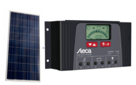

Victron SmartSolar laadregelaar
De Victron SmartSolar laadregelaar is handig om 3 panelen in serie te schakelen. Het is te makkelijk te bedienen met de gratis Victron connect app op Android en Ios. Het monitoren en updaten van de laadreglaar gaat ook via de app. Een laadregelaar zorgt ervoor dat je accu niet overlaad, zo gaat het veel langer mee. Deze zit dus tussen je zonnepanelen en je accu voor optimaal gebruik. Deze regelaar bevat ook Maximum Power Point Tracking (MPPT). bestel hier

175Wp 12Volt zonne-energie set
Deze zonne-energie set bevat 1x 175Wp 12V 36 cellen Victron Energy polykristallijn zonnepaneel, Steca Laadregelaar PR2525 incl. USB uitgang om telefoon op te laden. 20mtr Solarkabel 4mm2, MC4 connectoren, Montagematerialen naar keuze en Dak doorvoer. Het is zeer geschikt voor een camper, boot en tuinhuis. De set is op voorraad en kan meteen verzonden worden. De Steca laadregelaar zorgt ervoor, dat uw accu niet onder en overbeladen wordt. Als het voltage van de accu te laag wordt sluit de laadregelaar zichzelf af, daarmee wordt de levensduur van uw accu aanzienlijk verlengd. bestel hier
